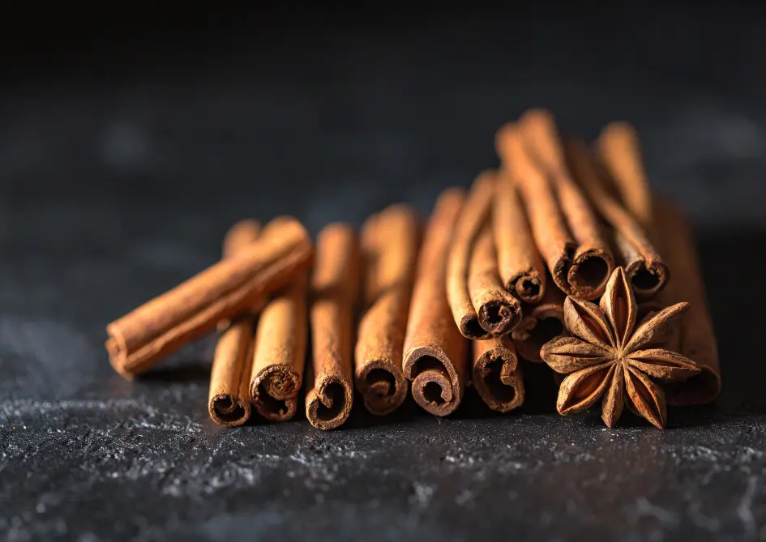

Ceylon Cinnamon Sticks
True Ceylon Cinnamon - Hand-Rolled Quills
Enjoy the delicate aroma and flavor of Ceylon Cinnamon Sticks — known as the "true cinnamon." Sourced from the inner bark of Cinnamomum verum trees in Sri Lanka, our cinnamon is gently peeled and hand-rolled into soft, brittle quills. Perfect for tea infusions, desserts, and wellness blends.
Key Product Highlights
- Origin: Matale, Sri Lanka (Single-origin)
- Processing: Hand-harvested, sun-dried, rolled by artisans
- Health Benefits: Blood sugar regulation, antimicrobial, rich in antioxidants
- Applications: Tea, baking, spice blends, potpourri, Ayurvedic remedies

Product Specifications
| Specification | Details |
|---|---|
| Scientific Name | Cinnamomum verum |
| Origin | Matale, Sri Lanka |
| Form | Rolled Quills (Cigarette Cut) |
| Length | 5–10 cm |
| Moisture | <13% |
| Color | Golden Brown to Tan |
| Packaging | 50g | 250g | 500g kraft packs |
| Shelf Life | 24 months |
How to Use Ceylon Cinnamon Sticks
In Beverages
Add to hot water, tea, or coffee for a naturally sweet aroma and calming effect. Also great in mulled wine and cider.
For Cooking
Use in rice dishes, curries, and stews. Break into smaller pieces to simmer and infuse sauces.
Storage
Store sticks in airtight containers, away from sunlight and humidity, to retain natural oils and aroma.
Add a warm touch of Ceylon to your pantry or product range.
Frequently Asked Questions
What makes Ceylon Cinnamon different?
Ceylon Cinnamon is lighter, sweeter, and safer for daily use due to low coumarin content compared to Cassia.
Can I grind the sticks into powder?
Yes, they can be easily ground in a spice grinder or crushed manually with a mortar and pestle.
Do you supply in bulk?
Yes, bulk and private-label orders are available with custom packaging.
Is your product lab tested?
Absolutely. Each batch is tested for purity, moisture, and essential oil content.